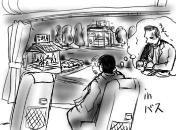
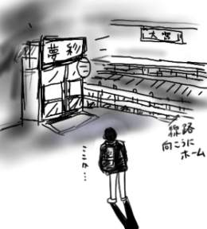

飛行機で帰省。昼間、出発まで時間があったので新宿でゲームに大夢中のニシーとイズミくんに遊んでもらう。こうして僕が休憩を入れないと彼等はいつまでたってもゲームをやり続けるからね！
うどん国の首都である高松が保有する空港まで１時間のフライト。しかし空港からJR高松駅までバスで40分もかかるので控えめに言って不便。帰りのバスの中で「なんでこんなに年末ムードたっぷりのライトアップでデコレートされているのに、弁当屋で、しかも客が家族連れ一組だけなのかな？」とか「なんでここの吉牛はこんなに混んでいるのかな？」とか「飛行機の中で調子に乗ってビールを注文しすぎて気持ち悪くなったパンチパーマの男は今どうしているのかな？」とかいろいろデス・イメージが浮かんでは消えてゆきました。帰って来たね！
夜道が暗すぎてドブに落ちそうになったり、やたらとよく見える満天の星空を眺めらながら帰宅。
実家に戻ると待っていたのは「数軒隣に住んでいる人が土地をすべて自分名義に変えて弟を追い出した」とか「あそこの家の娘が離婚して子供を連れて戻って来ている」などの話でした。

冬の祭典スペシャル！すなわちコミケでした。コミックマーケット。まさに市場であり、ナスダックジャパン参入について是非懸念していただきたい。
ボクはいろいろなことを、どうでもいいと思い込んで見逃してしまって、散々損をしてしまったようだ。いろいろなものに、しっかりと目を向けておこうと思った(アニメとか)。
朝一で名古屋からやってくるヒライワと合流してから会場に突入。七ちゃんブースにペーパーを投下！大人気オレ！というシナリオを思い描いていたのですが、ヒライワからの電話で起きた時にはすでに時間はAM10:00。「東京着、1235(ひとふたさんごー)」とか言いやがります。そして僕が東京駅に着いた時には12:55でした。遅刻しちゃったよ。
七ちゃんブースにとりあえずペーパーを置かせてもらった後、ヒライワと別れてかんぽにーに誘われて挨拶に回ったりしたんですが、それが終わった後、かんぽにーは(再び)エロ同人購入へ張り切って出かけてしまって一人取り残されたり、遭遇したまさしろ兄に「こんなん作ってるなよ！」とかペーパーについて説教されたりしてしょんぼりしたり、一人ではしょうがないのでヒライワと再合流してみると、ヒライワ目当てでやって来た人たちが次々と現れ、ヒライワは知っているけど僕は知らないという人達相手に横で微笑むことしかできなかったりで、どこにも僕の居場所がない気がしてきて「このまま消えてしまえたら…」とか思いはじめた時にカヅサツと哲がやってきて僕の話を笑って聞いてくれて、なんか妙に愛を感じたりして、このままでは何かの過ちがおこってしまうのではないかと思った。
コミケが終わった後、七ちゃんブースで待ち合わせをして新宿に移動。七ちゃんとはここでお別れ。ペーパーをおかせてもらったのに特にあいさつも出来なかっただけでなく、去り際に「ペーパー、朝一で欲しかったっす」と言われて、ものすごく申し訳ない気分になった。カヅサツのおかげで、いつもは店に入れないで放浪するのに、なんと予約まで取れてしまって、別行動組が新宿に到着するまでゲーセンとかイエローサブマリンで遊んだりでき、相当にびっくりしましたよ。移動途中の地下鉄で日能研のちらし(文部省の方針改正で小学生が円の面積を計算できなくなる！)を凝視していたら降り損なうところでした。知らせてくれたカヅサツ、哲コンビに、「これがエフェクトか！」とか「知らせずにおいてエフェクトを完成させてもよかったんだけどな！」とか言われましたが、僕としては、エフェクトがどうして起こるかについて何かヒントをつかんだような気になりました。それよりも学校教育が危ないです。
この辺りからストーリーが込み入ってくるので、各人についての印象とイベントを書き連ねることにする。
- カヅサツ
裾出しシャツの上からトレーナー、茶色のジャケットという一昔前のスタイルで登場。しかもマッカーサーサングラスを胸にかけた軍服コート。映像の２０世紀のコスプレ。合流待ち時間に伝説のDDRステップを披露。気が狂ったダチョウが、狩猟民族に捕まった後、彼等の儀式に怯えて飛べもしないのに空を飛んで逃げようとジタバタともがいているように見えた(失礼)。女装をしてなかったので指摘しておいた。僕が歩く後ろを哲と共に歩きながら「うらぶれた後ろ姿、日記の絵にそっくり！」などと言うので前述の愛を取り消しておいた。僕の尻にそそがれる視線が気になった。
- イズミくん
ニシーの友人。ゲーセン。一見、ゲームよりもスポーツをやっていそうな風貌なのに、ゲームをスポーツと称して一日９時間は平気なNerv.カーを駆るナイスガイ。みかん国生まれのカツオ国在住という死国渡り歩き者で、死についての様々な体験談で意気投合。あそこは暴力が支配する本当に死の国であることを再認識させてくれた。カツオ国では、うどん国におけるうどんと同じくらいのナチュラルさで食卓にカツオが上がるそうですが、すきやきにサバを入れるのは控え目に言って魚介類に頼りすぎです。
- あきひと
しぐれ弟。しぐれ邸に招かれて放置プレイの時(ヒライワ代打日記参照)、メガドラ版の『チェルノブ』やSFCの『ロケッティア』など、エンディングは見てみたいけどプレイする気はおきないゲーム(難易度とかゲームシステムの問題から)を片っ端からクリアしていた兵ゲーマー。現在の職業はゲームのデバッガーであり、天職。ヒライワによって改造され、もはや本体がバンダナと言われていたとは思えないくらいにカッコヨク変身しており、抱かれてもいいと思った。
- 哲
カヅサツの友人。"「ボトムズ」は最低野郎の意でAT乗りの蔑称である"や"エヴァ以降アニメ"など、どんどんとアニメ知識を植え付けられているゲーム畑の人間。合流待ち時間にナルキと3人でイエローサブマリンに突入！「TRPGでルール至上主義者っているよね」「でもルーンクエスト好きなんですよ！」「オレも！」「オレも！」「でもロールマスターはやりすぎなんですよ！」「やりすぎ！」「やりすぎだよね！」など、人間は解りあえるんだね(ゲームで)！だけど「FATMAN」というプロレスが題材のカードゲームを見つけて「うわぁ！オレ、これ死ぬ程やったよ！」と言われた時には遠くに感じた。なぜMUSCLE MANではなくFATMAN！
- 金原
秋葉原巡礼の時以来でお久しぶり。ミズグチエフェクトによって買ったメモリを認識しなかったり、買ったばかりのPowerMac G4が入院したりした様子。ごめんなさい、でも僕はもうエフェクトを制御できないんだ(最初からできていません)。あまりお話できなくて残念。
- south
IRC(要はチャット)で知り合いで、今回初対面。みんなの西海岸トークにとまどっていた様子。いやむしろコミケで成敗した大荷物が重そうで、朝一で疲れていて、飲み屋ではほとんど睡眠してました。あまりお話できなくて残念。
- かんぽにー
いつも通り。自分のデジカメを他人に持たせて変なポーズで写真を撮らせてた。ポケ手。
- おくのっち
いつも通り。アニメの話をすべてメカ視点で語る。
- ナルキ
いつも通り。イエローサブマリンで「送り雛は瑠璃色の」(ゲームブック)を購入。つられて僕も買った。あと、手打ちの劇場版ルリルリのiMode待ち受け画面。マジ、イケてる！
- ニシー
いつも通り。ツラさは酒で飲み干せ。
- まさしろ大人(ターレン)
途中から合流。初対面の人も多数混じっているので「オレに自己紹介をしろ！」と大人ぶりを主張するも、自己紹介がなされることはなかった。飲み会の後、まさしろ大人が「ラーメン食いに行こうぜ！」というのでつき合うとすでに閉店だっただけでなく、終電を逃してしまって、結局多聞で一泊することに。
- ヒライワ
異常。ジッパー付きの青いシャツでブチャラティのコスプレ。あと色眼鏡でゲンドウのコスプレ。コジャレやがって！いろいろあるけど、ほどほどにな。
- 鈴犬
働きすぎ。肌色のテレカを二日で売りさばく。気分が悪くなったので途中で退散。残念。
そんなわけで、主になんかちょっとはしゃぎすぎてみなさんに失礼なことをした気になって消えたくなったので、その辺り見逃していただけるとうれしいです。
年賀状に竜王を描いてから、もう12年経つんだぜ！(挨拶)
ヒライワのところに代打日記を書いたりしている間に、もう10日とか経っていました。みなさんお元気でしょうか。
indexをちょっと変えてみました。もちろんクリスマス風を演出するためでして、直に元に戻ると思います。元旦もindexは何かに差し換える予定です。
そして今さら、mouse on marsの「ニウン・ニグン」を買ったわけですが、too pureレーベル時代から比べて随分と毎日骨太なエレクトロミュージックに行き着いたもんだという感じで、YMO在籍時から解散直後にかけて細野晴臣が目指していた方向性(フィルハーモニーからモナド)などに近い何かを感じながらも、流れるうちに、自然と背景に現れてくるグルーヴ感などというものも感じられ、たいそう感心しました。と思ったら日本盤の解説は細野晴臣その人でしたので驚きました(自意識過剰)。ヨーロッパ盤から日本盤になった時にカットされた２曲というのが実に心底心残りなほどの出来ですので、ヨーロッパ盤の方がよい感じです。だまされたよ(日本盤ユーザー)。
そろそろコミケが開始です。ボクはと言えば26日に七ちゃんのブース、すなわちGUERILLASTUNTSTUDIO(東地区Ｔ５７ｂ)にお邪魔して手伝ったりする予定です。なんか便乗して『オレ図鑑(タイトル未定)』なるよくわからないペーパーを配付させてもらおうとこっそりと企んでますんで、よろしければ。というか七ちゃんに了承とってません、どうしましょう。とは言え握手！
忘年会シーズンですね！(ニュースキャスターの顔で。ただしジーンズで)
僕も参加してみましたよ、お金を払って見物する心持ちで。大宮の南銀座通りという都心を意識した、しかし意識だけで空回りという感じの日本のさまざま制度を批判するようなアナーキーな雰囲気をたずさえた(名前だけが)街を奥へ奥へ、キャバレーの角を奥へ奥へ、パブの横を奥へ奥へ、線路の脇を奥へ奥へ、って横、線路ですよ大丈夫ですか、と思って行き止まりまでたどりつくと、そこが会場でした。
店内のミュージックは天地真理や松田聖子やWinkであり、日本のヒット曲をおさらいする感じで心の中でウキウキして盛り上げておきました、自分を。世紀末だし！来年もまだまだ続くよ！20世紀！
来年から異動になる人のお別れ会を兼ねていたんですが、記念品がボンディブルーの留守番電話であり、しかも自分で自分にプレゼントとして買って来たのをこの場で大発表！驚きました、餞別品って自分で購入するのですね、思いやり！
あとは二次会などにひっぱっていかれ、ビートルズ世代のマネージャーが「ビートルズのレコードは後半は全部初盤で持ってるんだぜ。赤いんだぞ。お前らはまだ生まれて無いのか？知らないだろ？バーカ！」などと音楽批判でロッキンオンで陽一なので、心の中でロック・オンしながら(頭部に)
「ボクら、ビートルズ世代というよりYMO世代ですから」とかなんとなくテクノカットでびゅんびゅんで魔人ドルゲをルロルロっぽく口を尖らせて(クチビルゲ！)答えたところ、
「あんな音楽に電気使うなんて邪道だ！」
…エレキギターは？
ここも音楽系サイトへまた一歩近付いてきました。
